Shoutouts
Happy birthday to “The Professor”! Hope you’ve been enjoying your year in Vienna! Also since it’s now public I can lump this in with a shoutout on you getting that Google grant for drug design!
Monday
The week begins with a low as I regrettably fall ill. I’m not super bad but out of caution I do stay home from work and take it easy. I just lie in bed and chill. Dhdhdjejehwjdsh. I get better in the evening and had to resist the urge to go to Mission run club but since I was still recovering I needed to take it easy. Dhdhdjdjdjdjdjs.
Tuesday
Thankfully I’m better today so after another day igniting the inference igloo I go to play Spikeball with “The Spikeballer,” “Aquaman,” “The French scout” and a bunch of others. I’m unusually on my game today and do quite well, even managing to win a game 21-9. “The French scout” brought cookies from the Brittany region of France. They are quite good.
While there I ran into a guy I supposedly met 4 times already. He’s friends with both “The Notetaker” and his roommate and I’ve met him at their apartment before. When I introduced myself to him he opened with “Humza am I really forgettable? Because we’ve met 4 times” WELL ALRIGHT KEVIN I WILL SEAR YOUR NAME IN NOW. IM NOT FORGETTING YOU AGAIN. I’ve forgotten some names in my time but I don’t think I've been called out quite like this. Privately I do have to admit I don’t remember much about him but I’m not forgetting Kevin again.
Wednesday
After another day trying to bring unspeakable joy to the users I went to a vintage video party hosted by “Aquaman” and another friend. For those who may be wondering what that is, it’s essentially a party where people play old videos of theirs. The rule is that a video has to be at least 5 years old. People played all sorts of things including old cheerleading videos, a parody of man vs wild (man-child vs wild with grill bears), and everyone’s favorite being this one guy who vlogged his 18th birthday.
In case yall are wondering what I did, I showed a video of one of my old standup sets from 2020. Oh boy hearing that was a trip. I don’t wanna leave you guys out so here’s a link to it in all its glory
I remember just how much I hate the sound of my voice and that the audio quality on that was questionable at times: I think I could make out about 70% of what it said. There were some good jokes in there but there were some parts that were “difficult” as “The Philosopher” would put it.
After all the videos we hung around and chatted for a while. One of the people there is a genetic councilor so he was telling us about interesting things in his profession. One such thing is the fact that because women are born with two X chromosomes one of them will shut off during births. Totally random which one. He mentioned someone had a rare defect in that process which led to a whole host of problems manifesting as dining health issues. Despite that though this person still had a relatively ok life working in tech.
He also mentioned that we know more about deep space than our own DNA which is wild; estimating we know maybe 5% of how our DNA communicates with itself.
Finally he mentioned the people that come to him are an interesting split between the Peter Thiels who want to obsessively select for the best embryos and parents with psychosis who think their children may have a rare genetic disorder if something is even slightly off.
Thursday
After I finished appeasing the VCs I went to line dancing at Westwood with “Not a flosst cause” and a friend of “The Fisherwoman” the latter of whom I walked into on my way home and invited to come with.
When we got there we learned line dancing started an hour later than we thought so we decided to go to Silvercloud to chill. They have karaoke every night so we did a bit. “Not a flosst cause” really wanted me to do WAP but I wanted to spend more time at line dancing so I declined. Instead the three of us went up and did Never getting back together.
We then went to line dancing which was pretty fun but quite challenging. I think at best I was able to pick up on 30% of what was happening but I definitely enjoyed it and would be interested in doing it again.
While at the event I got a message from “Sustainably Fashionable” saying one of her friends is interested in going on a date with me. “Sustainably Fashionable” told this friend about my shopping and glow up journey which the friend found admirable. This is the first time I’ve had a date prospect by way of mutual friend so we shall se how this goes.
Friday
While I was in the middle of git committing to the bit an idea struck me. As I mentioned above it’s “The Professor’s” birthday this week and as a part of that he is doing a birthday scavenger hunt where he asks people riddles. Well I thought it would be fun to throw a riddle back at him. To do that I need one of the people going to his party to give it to him.
For anyone who doesn’t know he lives in Vienna which begs the question; who can I get that is going to this birthday event to give him a riddle anonymously on my behalf. It took some detective work but I managed to find someone. The first lead I used was the meetup that “The Professor” has hosted. I found a guy who went twice which meant they likely had some sort of rapport. I corroborated this by going on instagram and confirmed they both followed each other, and as an extra layer I looked at a photo of a murder mystery party that “The Professor” hosted and confirmed he was there.
Now that I found someone I needed to see if he was in. I shot him a message
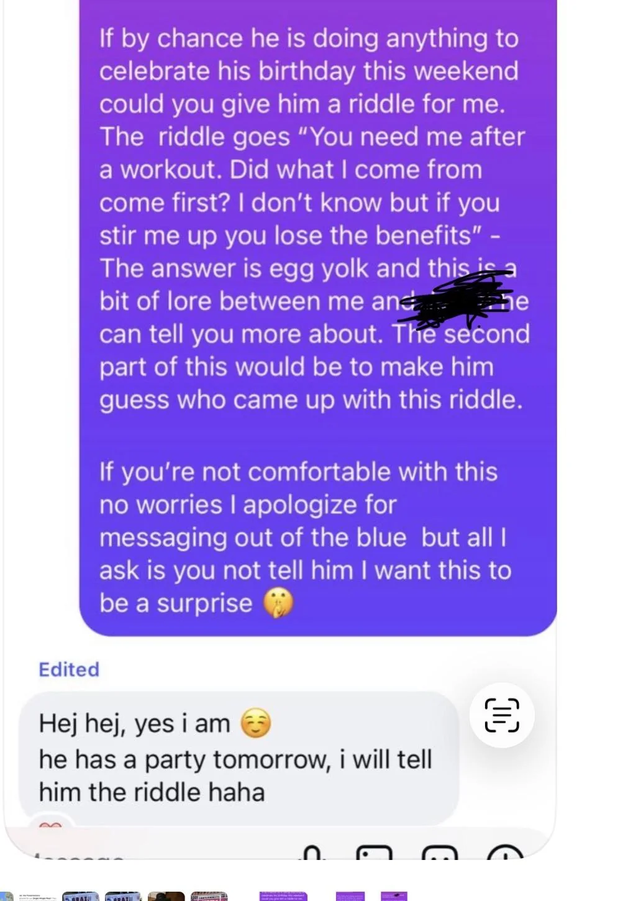
He’s in! Well nothing I can do now. Let’s tune back tomorrow to see if this worked out.
After I git committed to the bit I went stargazing over at SF state with “Not Misinformed,” “The Boxer,” “The Foxy lady,” “This little piggie didn’t go to the slaughterhouse,” and her boyfriend.
For anyone who hasn’t been to SF state before I can say the campus is actually quite nice. While I wouldn’t go out of my way for it I did get some nice views.
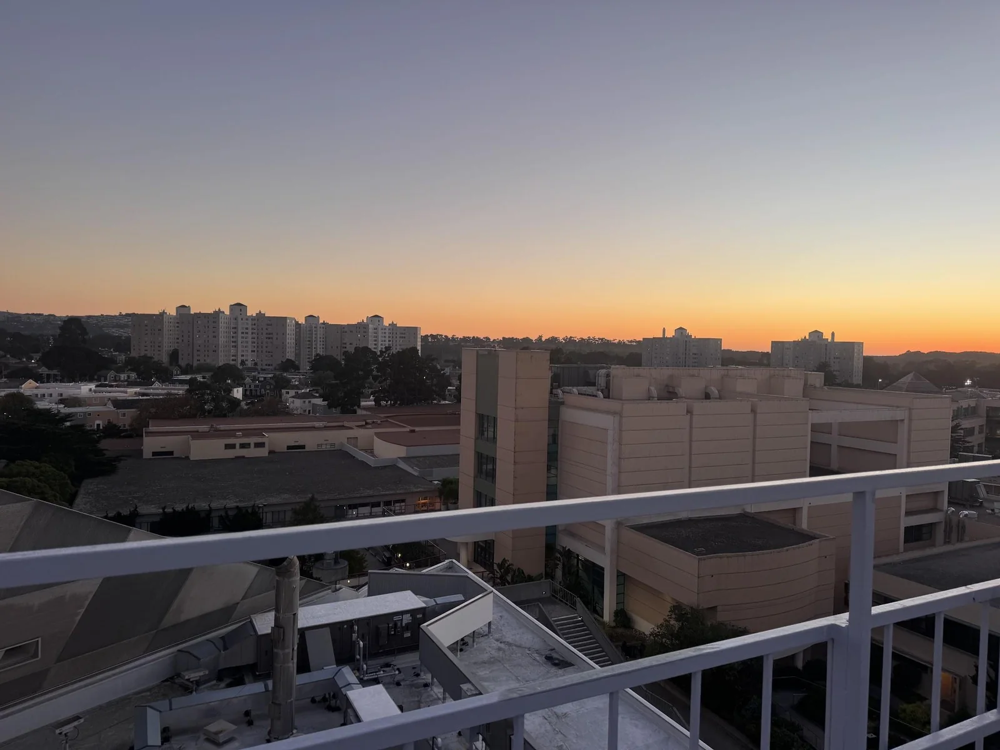
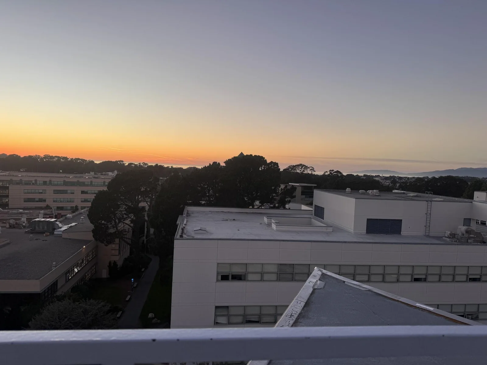
The star gazing itself happened on the top of a rooftop called Thornton hall.
Getting up there actually proved to be an obstacle of its own. I show up outside Thornton hall only to find that the door is locked. I circle around and find all the doors locked. However I notice there is a sky bridge connecting it to the nearby Hensil hall which is open.
I get in to Hensill hall and it’s unclear which floor has the bridge. After ChatGPTing it I realize it’s the 6th floor. I go there and I see a sign pointing to the skybridge. I go straight ahead only to find no bridge. There’s a big red door that just leads to either the 5th or 7th floor with the bridge out of reach. I double back to the elevator only to find that there is no other way to the bridge. I ask someone who came out of one of the rooms if she knew and she said she never took the bridge and suggested the red door that failed.
After asking ChatGPT again I try this small unmarked door just before the big red door and it worked. This seems unremarkable now but this whole side quest took me 20 minutes from when I first tried to go into Thornton hall to finally getting up to the roof.
Since I was the first one to get there I had the honor of relaying these instructions to everyone else.
As more people trickled in, more of the doors were locked and I’m not sure if that is SF State trying to teach some sort of life lesson to their students.
Regardless of that, the star gazing was great! I learned that this star Vega
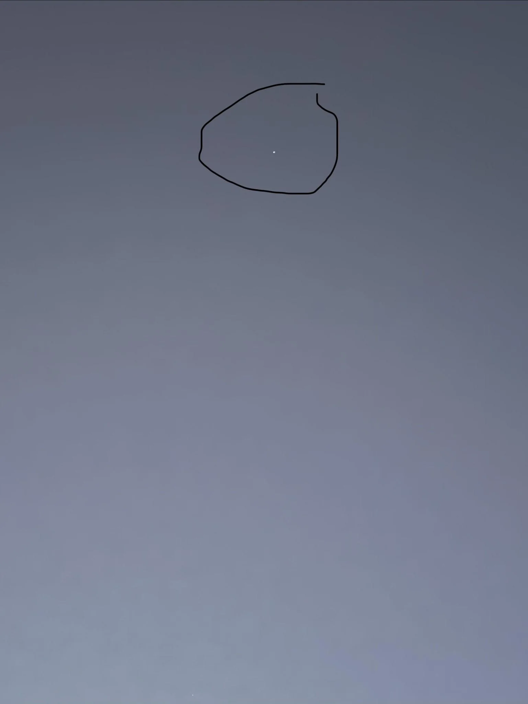
Is a really bright star called an O-type star and it’s used for calibrating for atmospheric absorption when measuring things about stars.
The crown jewel though was getting to see Saturn
For those unaware, trying to get a picture of something you see from a telescope is quite difficult, so to do it I had to take a video and continuously move my phone through the lens of the telescope and do a freeze frame to extract this
Saturday
I went home today to celebrate my older sister's birthday. Happy birthday dear older sister of mine!!
When I got home I got my family to do a wall sit competition. We all duked it out to see who can get the best time and the standings were as follows.
Me: 2 minutes and 24 seconds
Mom: 1 minute 8 seconds
Younger sister: 1 minute
Dad: 30 seconds
Older sister: Didn’t compete
To celebrate we got some food from a really good Afghani place in San Ramon. I forgot just how good really good Afghani food is. For context they make a special kind of kabob called Chapli kabob.
While I was in San Ramon I came across these gems of restaurant names
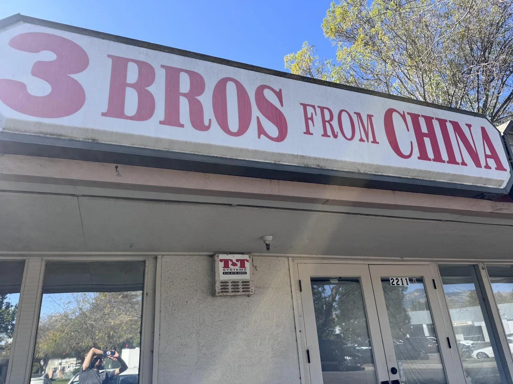
I can’t believe I found the place that has all the European food in San Ramon! Also I believe the 3 bros from China will be the future of Asian food!
Let’s check back in with our fearless “The Professor” and see if he got the riddle
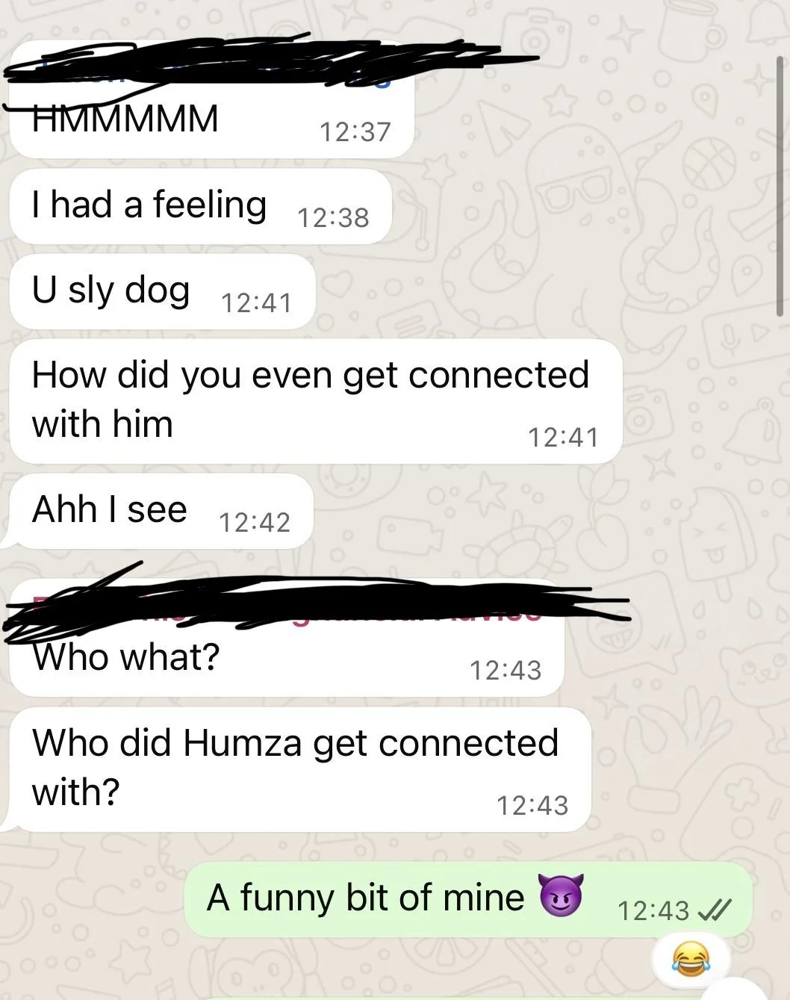
I explained to “The Professor” how I got in contact with his friend and after “The Professor” relayed it to the friend in question he had this to say about me
Good to know I have an alternative career path if this whole AI thing doesn’t work out. Maybe they can call me Detective Humza, he always solves his cases and never drops the Iqbal.
I got a ride back to the city from my Dad. Usually we don’t talk a lot 1:1 as our conversations tend to be pretty brief and mainly about the stock market and casual stuff but today I decided to ask him what he enjoys about his life since I know he doesn’t really have a lot of hobbies.
He told me that by the time you get to his age you lose a lot of the energy and desire to go out and make impulsive decisions and be active all the time and desire a more chill lifestyle. He said he’s happy relaxing more and not really doing as much. There was a time when he would be more active and do things but now he doesn’t and he’s happy with that. I wonder if I’ll be like that when I’m his age. Many of you may know that I don’t do well in stillness and the idea of spending a day chilling at home with the main excitement being driving to San Ramon to pick up Afghani food wouldn’t be a day I would personally call fulfilling but who knows maybe when I’m older that will change.
He also said that his desires have shifted to being happy when his family is out and about living a fulfilling life, making money and getting married. This then pivoted into how my dating / plans for getting married are going. I dodged the question a little bit and told him that I’m living a fulfilling life and making money but he came back to the point here.
This is funny because I was reminded how my parents would nitpick me on little things like my clothes and apartment being empty saying “We tell you this stuff because we’re family; your friends aren’t gonna tell you these things”. It is pretty clear they have not met my friends. I try to separate out the two but I really wanted to say “Trust me my friends tell me all this and more. Some of my friends have even seen my bathtub in its heyday (which they haven’t) and we still remain close friends to this day”.
Anyway that was all a tangent to say I’m not gonna tell my Dad that I have a whole council of friends working on the Humza dating project here.
Once I got back to the city I met up with “The Fisherwoman” and one of her friends to go to a street fair / festival on Mid Market. We saw someone put themselves through a ring which was quite acrobatic. It looked a little this
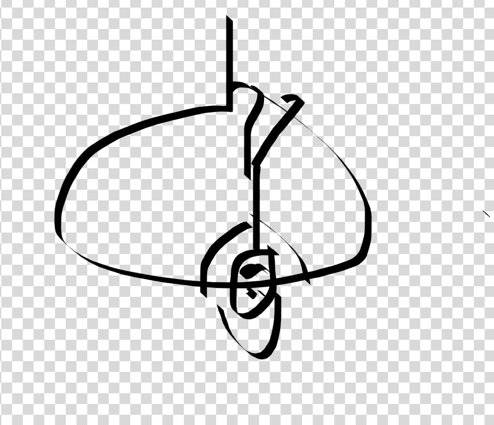
Sunday
I decided to go to a walk club today thinking it could be an interesting thing to try. There’s one that meets at Golden Gate Park and does a 2.5 mile loop through. I found a surprising number of people that I know somewhat but haven’t talked to in quite a while. One such person is someone I met at a run club who unfortunately is recovering from bronchitis and can’t speak much.
After the walk we went to a coffee shop near where I lived. I had an idea and dashed off to my apartment and came back with “Franklin”. For context, the person who I met from the run club ran a little bit with “Franklin” one of the times I brought him and took a picture in what she described as stolen valor. I thought she would be amused if I brought “Franklin” and I figured that with her recovering throat and “Franklin’s” lack of sentience the two would have a lot to not talk about together.
She was in fact amused as was everyone else when I ran into the coffee shop with an air purifier.
Later in the day I went to a writing event over at Madrone Art Bar. There is a prompt to help guide you “Don’t go in there”, but you don’t have to use it. Originally I anticipated this would be a good place to work on the newsletter since I was still a bit behind; what I didn’t anticipate was that I would be doing improv.
To explain while I was writing I was approached by someone who asked if I was interested in doing improv on stage and I said yes. Using the prompt above he wanted to dive into someone’s fears and have a scene depicting them on stage with some other people acting them out.
He asked me what I was afraid of and I mentioned disappointing people. I told him how when I have an expectation that I should be able to do something I hate not meeting it. I mentioned the date I may be going on next week and how with all the effort my friends and I have put into helping me improve everything from my fashion to my impressions to my ability to conform to social norms and I really want to do my best and have this go well.
For this he really wanted to dive into me going on a date and having me talk through my thought process as I go on said date.
He then recruited some other people and set up a scene where I go on a date with some girl, he asks both of us our thoughts as it's happening, and a few other people act it out. It’s pretty interesting and it was a lot of fun to perform.
For the most part the “date” itself is pretty straight forward. We ask each other what we do for work, what our hobbies are, and how long we’ve been in the city. When he asks me for my thoughts I go for a 50 50 ratio of serious thoughts to shit posting. I do seriously mention how I try to incorporate some of the advice I’ve gotten on the one hand and on the other hand I comment on how when she is taken back that I’m from Marin I say that I’m a down to earth relatable guy that only has 1 golden butler robot not 10 like some of my other friends.
On this “date” I also learned there is some EDM artist named HorsegiirL who wears a horse mask and I was assured a few times was not a furry. She is real by the way; I admit during the date there was a part of me that thought she was just improvising but I looked her up later.
It was quite a lot of fun and the host of the event said that I was both funny and good at being very candidly introspective about myself. I didn’t tell him that I have a whole council here to correct my blindspots but you know we’ll take it I suppose.
Personal training progress for the week
The dot plots below show every exercise logged through 10/15/2026; later dates are excluded. The x-axis is time, the y-axis is logged weight, and dot size represents reps or logged time. Bodyweight sets appear on the BW baseline.
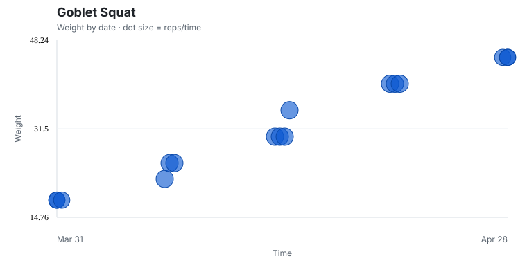

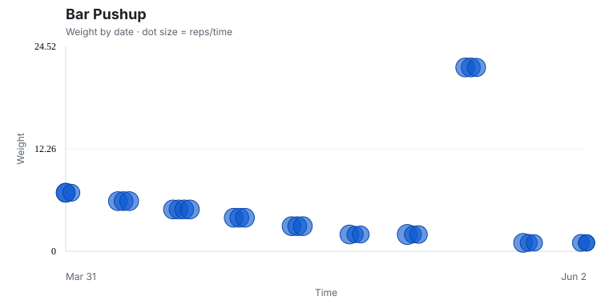

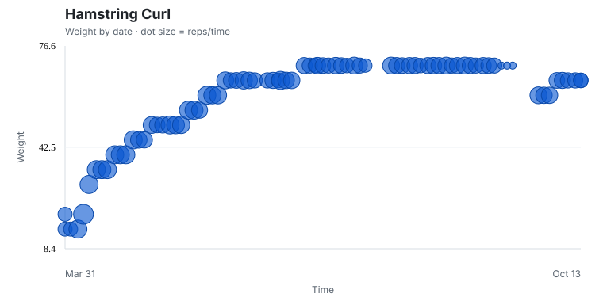

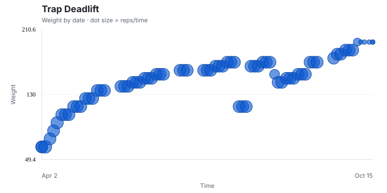

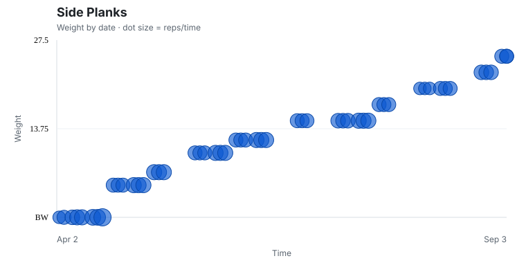
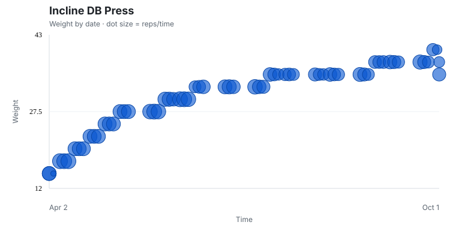


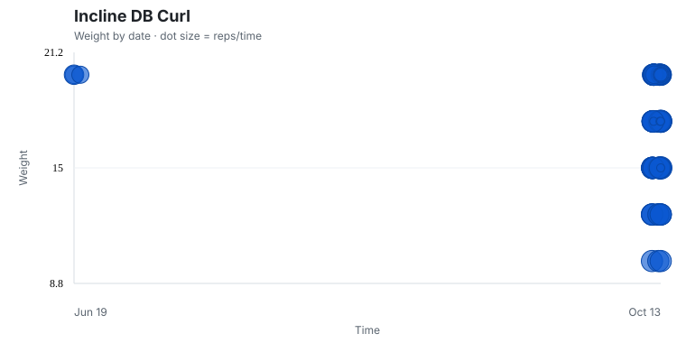

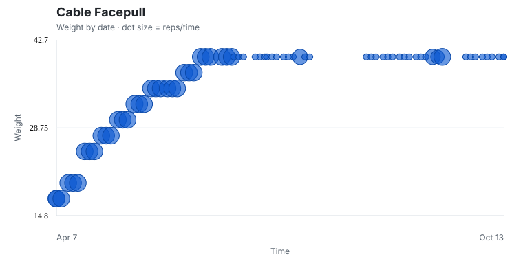
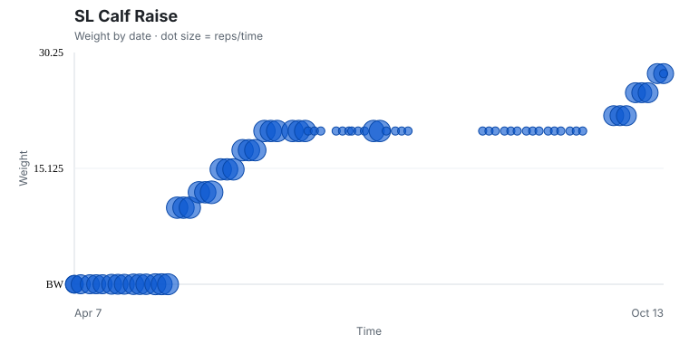
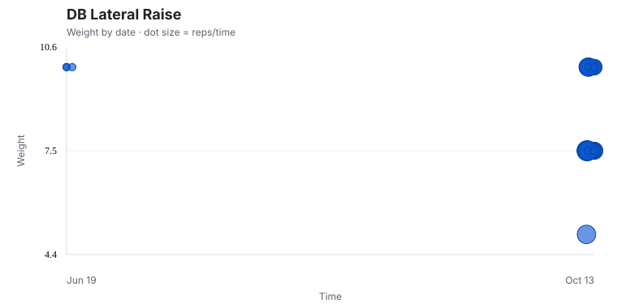
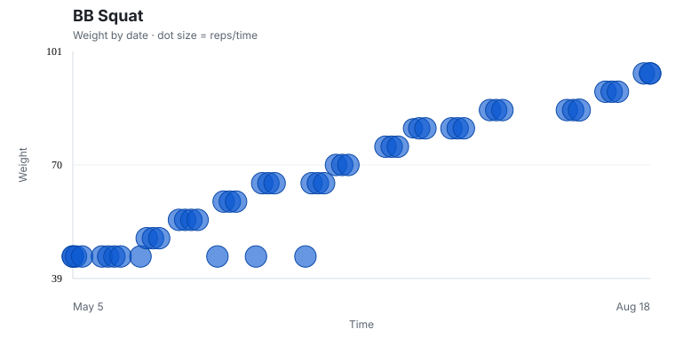
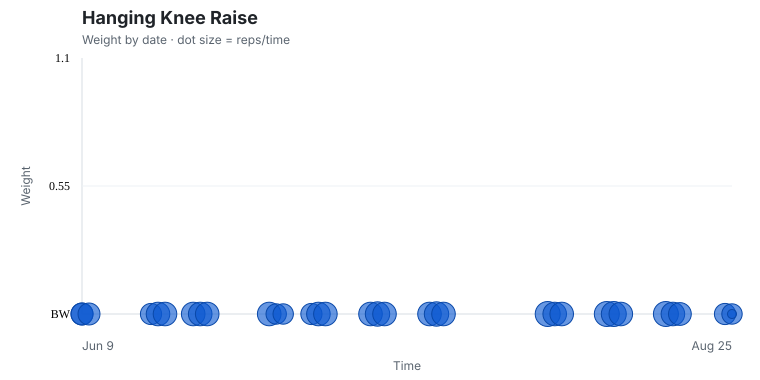
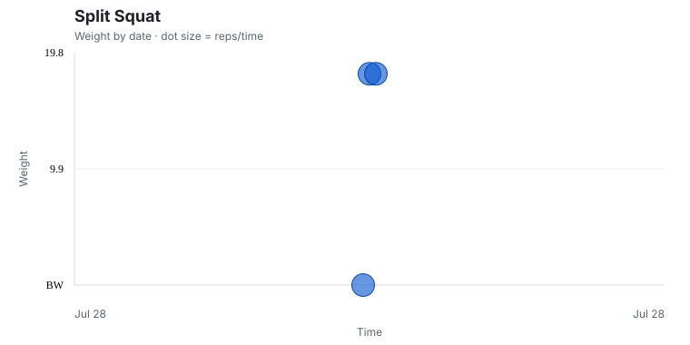
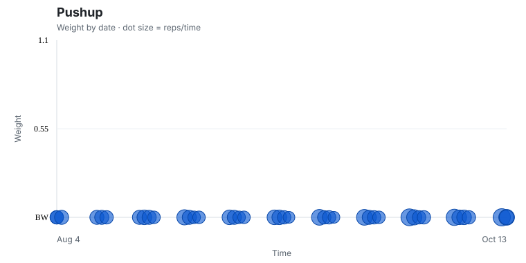
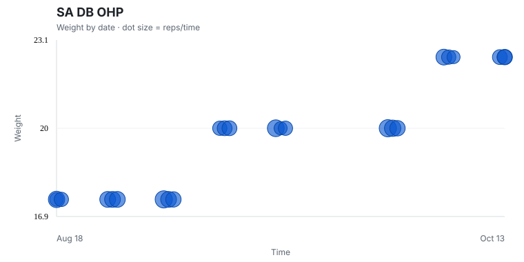
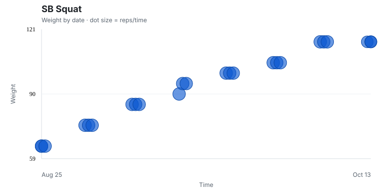

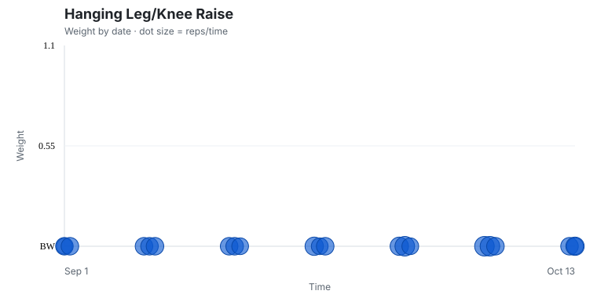
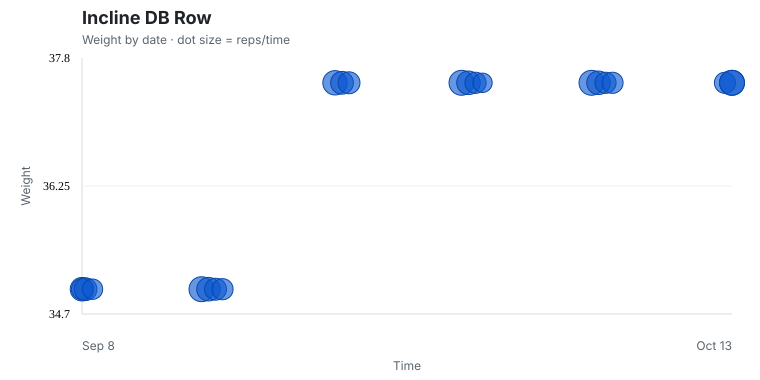